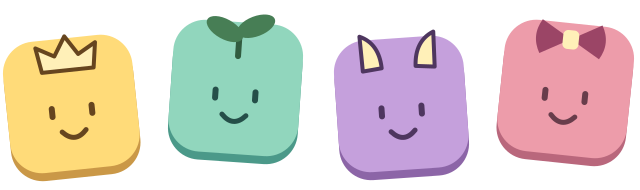

01 / GAMEPLAY
Pacing
Less waiting. More clearing.
Problem
Waiting for the right tile clogs the board with unsolvable pieces.
Hard to chain. No way out.
Solution
Replace bottom-spawned 1×1 tiles with special tiles dropped from above.
Same clearing rules. More random effects.
A small goal loop beyond emptying the board.
02 / WORLD & PURPOSE
Revised Setting
A little feast.
A family to grow.
- 01What is the board?
- Your creature’s mouth — ready for its next bite.
- 02What is being cleared?
- Food tiles. Slide them into full rows to eat.
- 03What does clearing mean?
- Eating builds fullness and feeds growth, giving every clear a purpose beyond making space.
- 04Where do Juniors fit in?
- Young creatures sharing the feast. Feed them through clears, help them grow, and collect them as helpful companions.
03 / BEYOND THE BOARD
Long Term
Content Roadmap
More Juniors.
More reasons to return.

A GROWING CAST OF COMPANIONSOUTSIDE GROWTH
Build your collection.
Unlock different types of Juniors and grow your collection over time.
PLAY→UNLOCK→COLLECT
04 / TRY THE PROTOTYPE
PROTOTYPE NOTE
The game has not been balanced yet.
Couldn’t start the game. Please reload and try again.